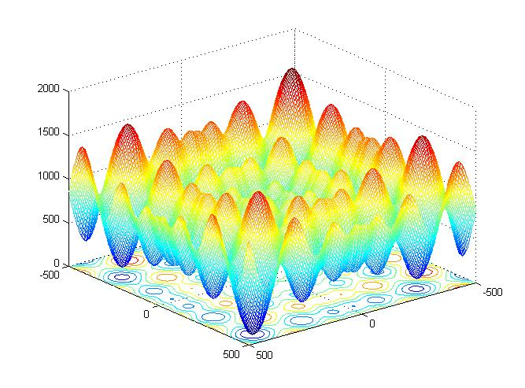

Schwefel's (sine root) function is highly multimodal and has no global basin of attraction. The optimum at a fitness of f(x*)=0 lies at x*=420.9687. Schwefel's sine root is a tough challenge for any global optimizer due to the multiple distinct optima. Especially, there is a deceptive nearly optimal solution close to x=(-420.9687)n.

Schwefels's sine root function in 2D within the co-domain -500 <= x <= 500.
David. H. Ackley. A connection machine for genetic hillclimbing. Kluwer Academic Publishers, Boston, 1987.
Thomas Baeck. Evolutionary Algorithms in Theory and Practice. Oxford University Press, 1996.